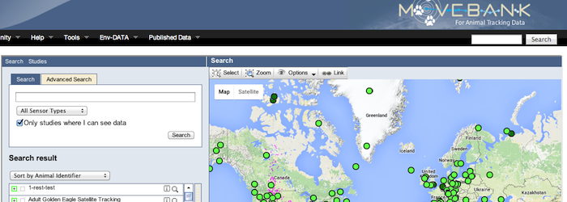
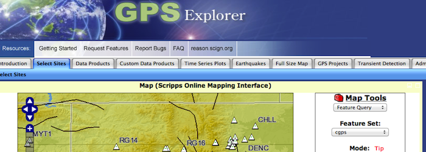
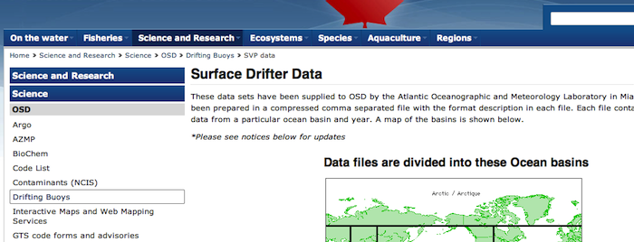
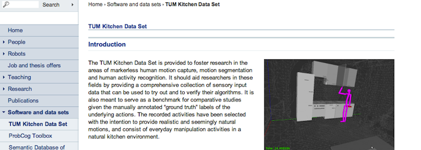

The first step in building the MotionTrack interactive was finding motion tracking data for objects at many different spatial scales. I already had data from my own research on molecule and nanoparticle motion, so I was looking for trajectory data for animals, planets, people, bacteria, atoms, etc. Fortunately, it's becoming easier to track the motion of individual objects using better sensors and more computation, and slowly that data is becoming available online. Unfortunately, significant data carpentry is still required to get the data into a consistent format. Below is a list of the motion tracking data sources that I've found, with notes on the particulars of each. Tell me if you know about any others.
Movebank is a repository of animal tracking data from around the world. This was one of the best data sources I found, in terms of documentation and user interface. They have data on all sorts of animals, from birds circling the world to tortoises crawling around. You can browse the data through a map interface, which is a little slow, but fairly intuitive. Some of the listed data sets are not available for download, which kind of defeats the purpose, but many are provided as a csv download in a standardized format accompanied by a documentation file explaining the different values. An excellent source!
GPS Explorer is an interface for downloading trajectory data from a network of GPS sensors in North America, whose purpose is to monitor crustal motion. Here, the interface and documentation is not good, but apparently it works for the geoscientists who are the main users. First, you have to register for an account, then wade through some unexplained termonology, select sites on a map, save the sites as a "group", go to the "Data Products" page and query the sites for what we want: a time series of xyz coordinates. And still it takes some trial and error to find a sensor site that provides data over the time range that you want.
These are data from a collection of monitoring bouys drifting about in the world's oceans. They periodically report position as well as some other measures like water temperature and salinity. It was relatively easy to get the data - with one click you can download the data from all of the bouys in one ocean for one year. I downloaded the data in "Raw" format; I don't know the meaning of "Krig" or "P & S".
I thought it would be easy to find data on human motion, but I haven't found much. Maybe this field of research doesn't have the same culture of data sharing as ecology or geoscience. What I did find came from a group at Techniche Universitat Munchen doing research on markerless human motion capture - a application of computational image analysis. What you get is a csv file containing a time series of xyz coordinates of a person's body parts while they were doing a natural series of motions.
